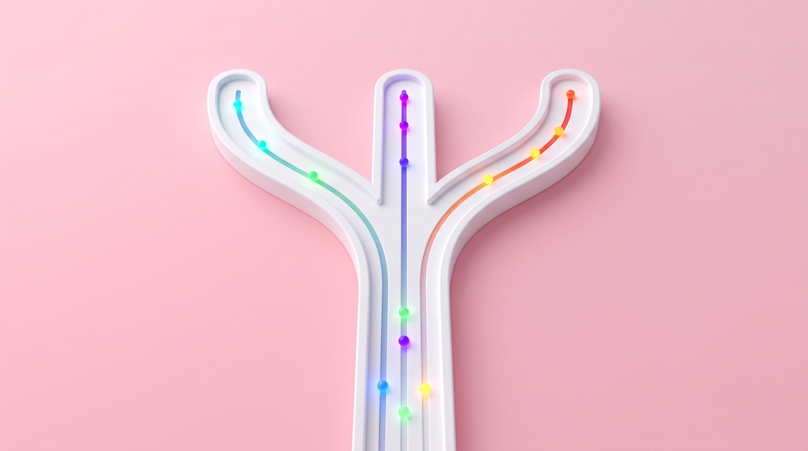
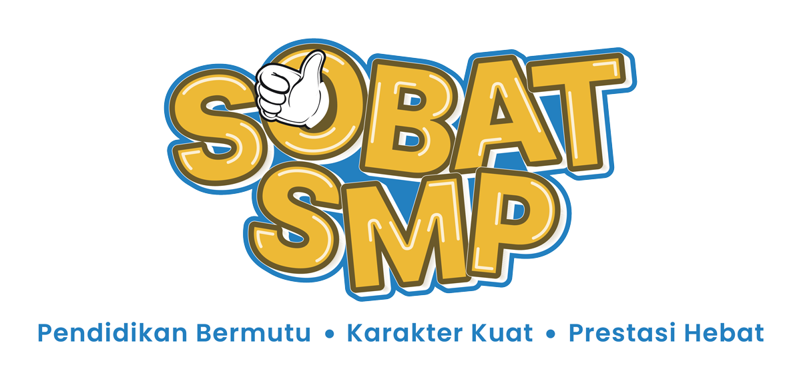

Jaringan Komputer Perjalanan Paket Data
💡 Panduan Singkat Menggunakan Media Pembelajaran Interaktif (MPI)
🧭 Tombol Navigasi
Kembali ke halaman sampul utama (cover) kapan saja.
Membuka menu utama untuk memilih topik materi atau aktivitas.
Berpindah ke materi atau halaman sebelumnya.
Melanjutkan ke materi atau tantangan berikutnya.
🎯 Alur Pembelajaran
Pahami konsep paket data & router, simak video animasi, dan coba aktivitas menjodohkan istilah.
Simulasikan rute pengiriman paket data dan tentukan jalur alternatif pada Packet Commander Game.
Uji pemahamanmu lewat soal evaluasi interaktif dan dapatkan rekapitulasi skormu.
Baca ringkasan inti materi, tuliskan refleksi belajarmu, dan selesaikan seluruh pembelajaran.
🎯 Setelah mengikuti pembelajaran interaktif ini, kamu diharapkan mampu:



🌐 1. Apa Itu Jaringan Komputer?
Jaringan Komputer adalah sistem yang menghubungkan miliaran perangkat digital (HP, laptop, server, smart TV) di seluruh dunia agar dapat saling berbagi koneksi internet, data, pesan chat, video, dan berkas secara instan.
✂️ 2. Mengapa Data Harus Dipecah?
Saat kamu mengirim foto 5 MB di chat, file tersebut TIDAK PERNAH dikirim utuh segumpal di kabel internet, melainkan dipotong menjadi ribuan serpihan kecil bernama PAKET DATA (Packetization).
💡 Analogi Lemari Rakit (Knockdown): Jauh lebih mudah dan aman mengangkut 4 kotak kardus potongan lemari di mobil daripada mengangkut 1 lemari kayu raksasa yang sudah jadi!
💌 3. Anatomi Paket Data (Analogi Amplop Surat)
Setiap paket data yang meluncur di jaringan memiliki 3 komponen utama:
Berisi Alamat IP Pengirim & Penerima, serta Nomor Urut Paket (mis. "Paket #2 dari 4") agar komputer penerima dapat merakitnya kembali tanpa tertukar.
Berisi potongan data asli yang dikirimkan (misalnya ribuan byte piksel foto kucing atau potongan teks pesan).
Berisi kode verifikasi error (Error Checking) untuk memastikan data tidak rusak atau korup selama melintasi kabel sinyal.
🚦 1. Apa Itu Router?
Router adalah perangkat keras jaringan cerdas yang berfungsi sebagai "Polisi Lalu Lintas Digital". Di internet terdapat jutaan persimpangan kabel dan nirkabel, dan router bertugas mengarahkan setiap paket data ke jalur tercepat yang tidak macet.
🏠 2. Peran Router di Rumah & Sekolah
Router di rumahmu menghubungkan seluruh perangkat di dalam rumah (HP, laptop, Smart TV) ke satu saluran internet global dari ISP (penyedia internet) secara bersamaan tanpa saling bertabrakan (Network Address Translation / NAT).
✨ Cerdas & Cepat: Router mampu membaca, memverifikasi alamat, dan meneruskan ribuan paket data dalam hitungan mikrodetik!
🧭 3. Tiga Tahap Router Memproses Paket
Setiap kali paket data tiba di router, terjadi 3 tahapan otomatis:
Router membuka dan membaca Alamat IP Tujuan yang tertera pada Header paket data.
Router mencocokkan alamat dengan tabel rute digital untuk menghitung jalur terpendek dan tercepat yang tidak macet (mirip algoritma navigasi peta digital / GPS).
Paket dioper ke router tetangga berikutnya (Next Hop) hingga akhirnya tiba di komputer tujuan.
🔀 1. Kehebatan Rute Dinamis (Dynamic Routing)
Topologi internet dirancang berbentuk jaring laba-laba (Mesh Topology), artinya selalu ada lebih dari satu jalan untuk menuju tujuan yang sama.
Jika salah satu jalur putus atau router mengalami gangguan (Server Down / RTO), router otomatis membelokkan paket ke jalur alternatif yang lancar tanpa membuat internet mati total!
4 paket dari foto yang sama bisa melesat bersamaan lewat 4 jalur berbeda (kabel darat, serat optik bawah laut, hingga sinyal satelit).
🧩 2. Perakitan Kembali di Penerima (Reassembly)
Karena paket data menempuh rute yang berbeda-beda, paket bisa saja tiba tidak berurutan (Out of Order) — misalnya Paket #3 tiba lebih awal daripada Paket #1.
Komputer penerima menampung setiap paket yang baru tiba ke dalam memori antrean (Buffer Memory).
Komputer membaca nomor urut (#1, #2, #3, #4) pada masing-masing Header paket.
Semua potongan piksel disatukan kembali secara presisi menjadi foto kucing yang utuh dan siap ditampilkan di layar!
🎬 Poin Penting Video:
📦 1. Pemecahan Data
File dibagi menjadi paket data kecil (Header + Payload) agar efisien saat melintasi jaringan.
🚦 2. Peran Router
Mengarahkan tiap paket data ke rute tercepat dan paling lancar menuju alamat tujuan.
🔀 3. Rute Dinamis
Kemampuan jaringan otomatis mengalihkan paket saat jalur utama terganggu atau server down.
🎯 Klik istilah di sebelah kiri, lalu klik definisi yang tepat di sebelah kanan untuk menghubungkan garis!
4 Tahapan Pengiriman Data & 3 Keunggulan Utamanya
Teknologi pengiriman data di seluruh dunia menggunakan metode Packet Switching dengan 4 tahapan berurutan:
⚡ 1. Efisiensi Tinggi (Bisa Berbagi Jalur / Multi-User)
Jalur internet tidak dimonopoli satu orang. Ribuan siswa bisa mengirim foto bersamaan karena paket-paket kecil bisa menyelip bergantian di jalur yang sama.
🛡️ 2. Andal & Tahan Gangguan (Fault Tolerance)
Jika ada kabel putus di tengah jalan, hanya paket yang hilang yang perlu dikirim ulang, bukan seluruh file 5 MB dari awal!
🚀 3. Kecepatan Paralel Super Cepat
Paket data dapat dikirim secara bersamaan melalui berbagai rute berbeda, lalu langsung disusun kembali di komputer penerima dalam milidetik.
Permainan — Packet Commander
Uji keahlianmu sebagai pengatur rute jaringan komputer handal!
Taklukkan 3 Misi Tantangan: Rute Alternatif saat Server Down, Bagi Beban
Jalur (Load Balancing), hingga Perakitan Kembali Foto (Packet Reassembly)!
Latihan Evaluasi
Uji pemahamanmu secara menyeluruh melalui
5 jenis tantangan interaktif:
Pilihan Ganda, Benar/Salah, Menjodohkan, Mengurutkan Proses, dan Simulasi Praktik!
Klik istilah di sebelah kiri, lalu klik definisi yang tepat di sebelah kanan untuk menghubungkan. Kamu bisa mengklik kartu/tombol ✕ untuk membatalkan atau mengoreksi pasangan.
Seret kotak-kotak tahapan berikut ke urutan proses transmisi data yang benar dari awal hingga akhir.
- Kurikulum Merdeka — Capaian Pembelajaran Informatika Fase D, Kementerian Pendidikan Dasar dan Menengah Republik Indonesia.
- Buku Siswa Informatika Kelas VIII — Bab Jaringan Komputer dan Internet, Pusat Perbukuan Kemendikdasmen.
- Tanenbaum, A. S., & Wetherall, D. J. (2011). Computer Networks (5th Edition). Pearson Education.
- Kurose, J. F., & Ross, K. W. (2021). Computer Networking: A Top-Down Approach (8th Edition). Pearson.
- Storyboard MPI Informatika — "Jaringan Komputer: Perjalanan Paket Data", Tim Pengembang SMP Negeri 2 Lamongan, 2025.


BERKARYA UNTUK NEGERI MELALUI DIGITALISASI PEMBELAJARAN INOVATIF BERDAMPAK
— Bersama Memajukan Pendidikan Indonesia yang Bermutu dan Berkarakter —
Inovatif & Kreatif
Mendorong pembelajaran interaktif berbasis teknologi jaringan cerdas
Bermutu & Relevan
Menyajikan materi esensial sesuai kurikulum masa depan
Karakter Berdaya
Membentuk generasi pembelajar mandiri dan bernalar kritis




KEMENTERIAN PENDIDIKAN DASAR DAN MENENGAH
DIREKTORAT JENDERAL PENDIDIKAN ANAK USIA DINI, PENDIDIKAN DASAR, DAN PENDIDIKAN NONFORMAL DAN INFORMAL
DIREKTORAT SEKOLAH MENENGAH PERTAMA